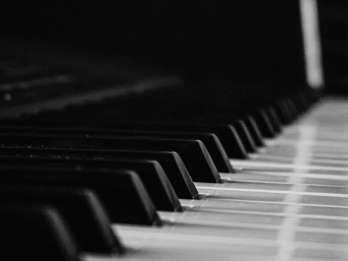
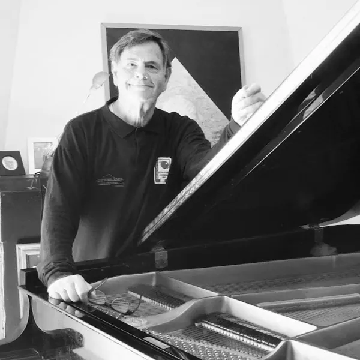
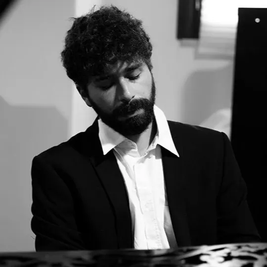
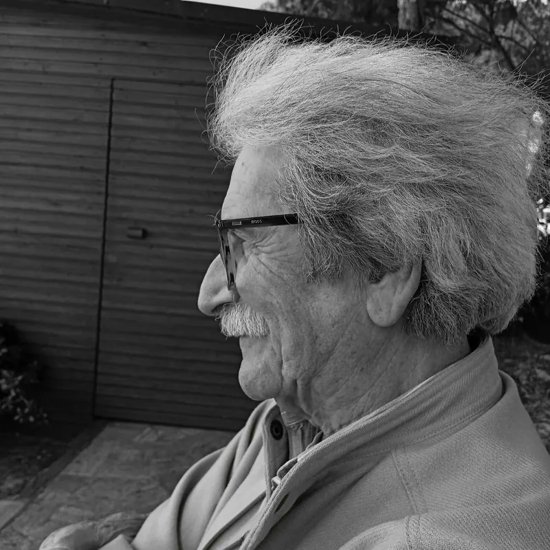

Pianoforte

Categoria A: solisti (Pianoforte) - Premio “Corrado Rollero”
- A1 Classe 2014 e anni successivi Durata massima 5 minuti
- A2 Classe 2012-2013 Durata massima 6 minuti
- A3 Classe 2010-2011 Durata massima 8 minuti
- A4 Classe 2008-2009 Durata massima 10 minuti
Per le classi A1 e A2 la prova sarà composta da un programma a libera scelta della durata complessiva come sopra descritto.
Per le classi A3 e A4 la prova sarà composta da un pezzo d'obbligo più un programma a libera scelta della durata massima complessiva come sopra descritto.
Brano d'obbligo per le classi A3 e A4:
Corrado Rollero: Piccolo valzer in do minore Op.21 N° 1.La Commissione

Franco Trabucco
Nato a Leivi (GE) ha compiuto gli studi musicali presso il Conservatorio Niccolò Paganini di Genova, diplomandosi con il massimo dei voti in pianoforte sotto la guida di Criscuolo e in organo sotto quella di Molfino.
Dal 1969 al 1974 ha frequentato i corsi di perfezionamento pianistico di Vincenzo Vitale a Napoli e a Venezia e i corsi all'Accademia Musicale Chigiana di Siena.
Dal 1969 al 2009 è stato docente di pianoforte principale al Conservatorio Niccolò Paganini di Genova. Ha interpretato prime esecuzioni di Flavio Testi, Gian Piero Reverberi, Raffaele Cecconi, Emilio Grimaldi. L'etichetta discografica Dynamic ha recentemente pubblicato l'opera omnia pianistica di P. I.Ciakovskij registrata dal vivo da Franco Trabucco nel salone dei concerti del Conservatorio “Paganini” di Genova. Ha inoltre alternato l'attività concertistica a quella didattica, vincendo il concorso per pianoforte e organo presso l'Orchestra Sinfonica Nazionale della RAI di Milano, il concorso per titoli ed esami inerente alla cattedra di accompagnatore di pianoforte nelle classi di canto del Conservatorio Niccolò Paganini di Genova. Organista e direttore del coro polifonico della Cattedrale di Chiavari. Franco Trabucco svolge attività concertistica come solista, in duo col fratello Mario violinista, con la sorella Maria mezzosoprano, e in trio con Mario Trabucco e Matteo Ronchini (violoncellista).
Classificato e vincitore in numerosi concorsi pianistici nazionali ed internazionali, come il “Casagrande” di Terni, il “Beethoven” indetto dalla televisione italiana del 1970, il “Sergio Lorenzi” all’Accademia Musicale Chigiana di Siena, e altri. Collaboratore al concorso violinistico internazionale “Paganini” di Genova, al Premio “Città Vittorio Veneto” ed ai Seminari internazionali tenuti da Salvatore Accardo e Uto Ughi.

Simone Morgillo
Nato a Chiavari (GE), intraprende lo studio del pianoforte sotto la guida di Stefania Colucci presso la Società Filarmonica di Sestri Levante. Nel 2020 consegue il diploma accademico di secondo livello con il massimo dei voti e la lode sotto la guida di Anna Maria Bordin presso il Conservatorio “Niccolò Paganini” di Genova.
Nel 2018 ottiene il primo premio per la borsa di studio “G.Ponta”. Ha partecipato a masterclass di Levinas, Lucchesini, Martin, Proll. Si è esibito come solista e in formazione a quattro mani per “Piano No Stop”, “Avigliana…Insieme”, “Erremusica”, Scuola musicale “Giuseppe Conte”. Dal 2017 si è avvicinato alle realtà contemporanee includendo nel suo repertorio musiche di L. Brignole, C. Magnan, C. Rebora, M. Levinas.

Canzio Bucciarelli
Canzio Bucciarelli, già docente di Pianoforte Principale presso il Conservatorio N. Paganini di Genova, ha svolto attività concertistica, solistica e cameristica, come Pianista, Organista e Clavicembalista. Principalmente come Pianista tiene concerti in molte città italiane collaborando anche con il Teatro Carlo Felice di Genova, con il Teatro Regio di Torino, Settimane Musicali di Stresa, in alcune edizioni di "Musica ‘900" del Teatro Carlo Felice di Genova.
Ha effettuato registrazioni per la RAI, RAI TV, Emissora Nacional di Lisbona, Radio Svizzera Italiana.
Ha collaborato, in qualità di Maestro Sostituto, con il Teatro Comunale dell'Opera di Genova e con l'Opéra de Monte-Carlo.
E' stato uno dei soci fondatori dell’Ensemble "ORCHESTRA DA CAMERA DI GENOVA", protagonista per più di un decennio, della vita musicale di Genova e della Liguria, soddisfacendo svariate richieste di produzione musicale con un particolare riguardo alla musica del '900.
Durante i primi anni '90 è Consigliere d'Amministrazione del Teatro Carlo Felice in rappresentanza del Sindacato Nazionale Musicisti
Dal 1991 al 2011 partecipa, a Varese Ligure (SP), all'allestimento e alla concertazione delle Opere nelle Stagioni Liriche organizzate dall’ Associazione “LIRICA CLUB VARESE LIGURE”. Dal 1997 al 2011 ne è stato anche Regista e Direttore Artistico
Nel 1997 è stato uno dei soci fondatori e Presidente dell'Associazione Culturale “ORCHESTRA REGIONALE LIGURE” e ne ha curato, assieme ad altri soggetti e a seconda delle personali competenze, la Direzione Artistica e la Direzione dell’orchestra.
Per conto di questa Associazione ha personalmente curato il recupero, l'Edizione Critica e l'esecuzione in pubblici concerti di musiche manoscritte di vari Autori genovesi come Francesco Gnecco, Nicola De Giovanni, Antonio Costa, Martino Bitti. Di particolare rilevanza il recupero di due manoscritti relativi a due Farse di Francesco Gnecco con pubbliche esecuzioni in Genova.
Parallelamente, in occasione dell'Anno Giubilare del 2000, per conto della Diocesi di Chiavari, cura il recupero e l'esecuzione di diversi lavori di Monsignor G. B. Campodonico
Successivamente, dopo la scoperta ufficiale della data della morte di Francesco Gnecco da parte del Prof. Maurizio Tarrini, si dedica alla trascrizione della Farsa “CAROLINA E FILANDRO” dal manoscritto giacente presso la British Library di Londra con lo scopo di proporne una pubblica esecuzione e un Convegno di Studi durante l'anno 2010, anno della ricorrenza del bicentenario della morte. La proposta, però, non trovò il giusto accoglimento
Per conto dell'Associazione ha promosso, inoltre, attività divulgativa del linguaggio musicale indirizzata al mondo della scuola, producendo spettacoli e concerti, come “IL MAESTRO DI CAPPELLA” di D. Cimarosa e Fiabe Musicali come “PIERINO E IL LUPO” di S. Prokofiev, “ROSPA LA STREGA” nuova fiaba musicale su testo di R. Siri e musica di C. Bucciarelli e il racconto didattico “DALLO SCRIGNO SCHIUSO ... “ testo e musica di C. Bucciarelli sulla presentazione degli strumenti dell'orchestra sinfonica